Camping-car Ford Transit Autostar de 1981
Notre premier Camping-car, acheté et relooké en 2012.
L'aménagement intérieur, la motorisation et l'équipement ont été rénové avec un petit budget.
Nous avons gagné en éxpérience grâce à ce camping-car.
 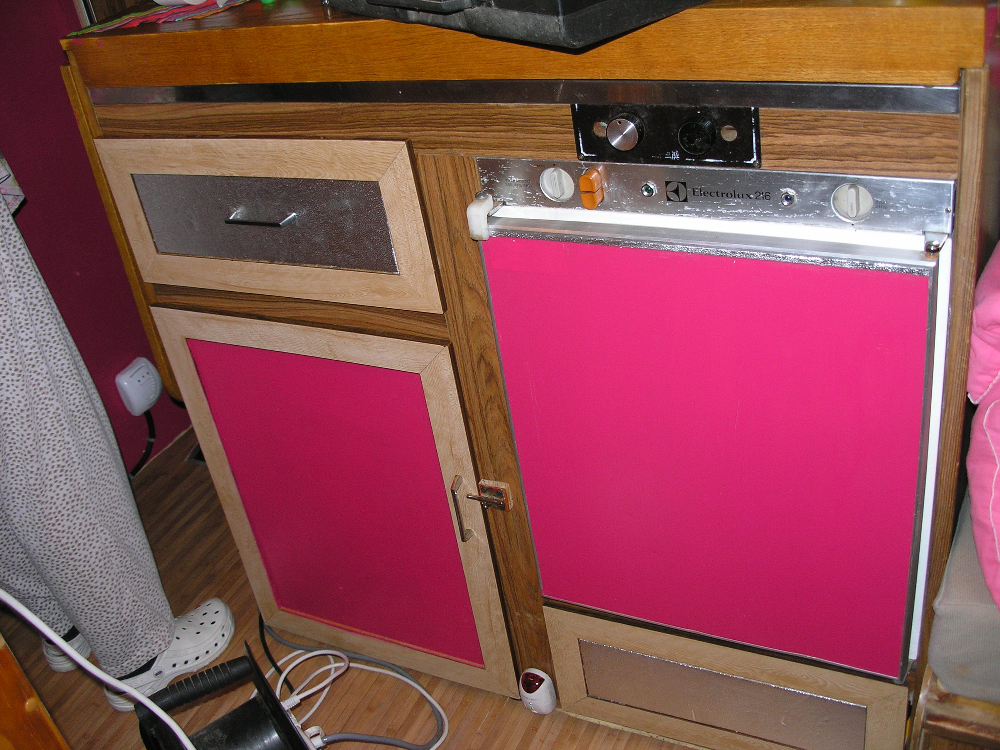
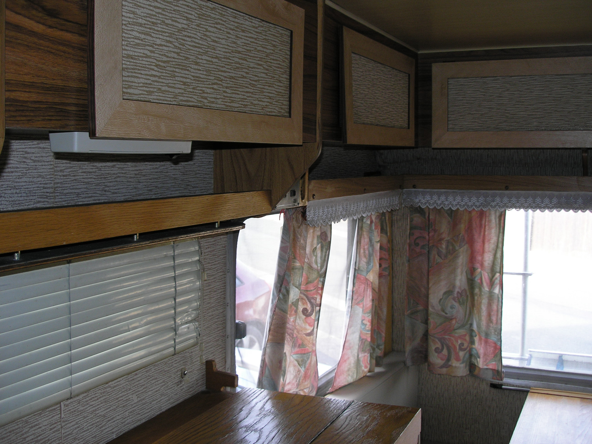
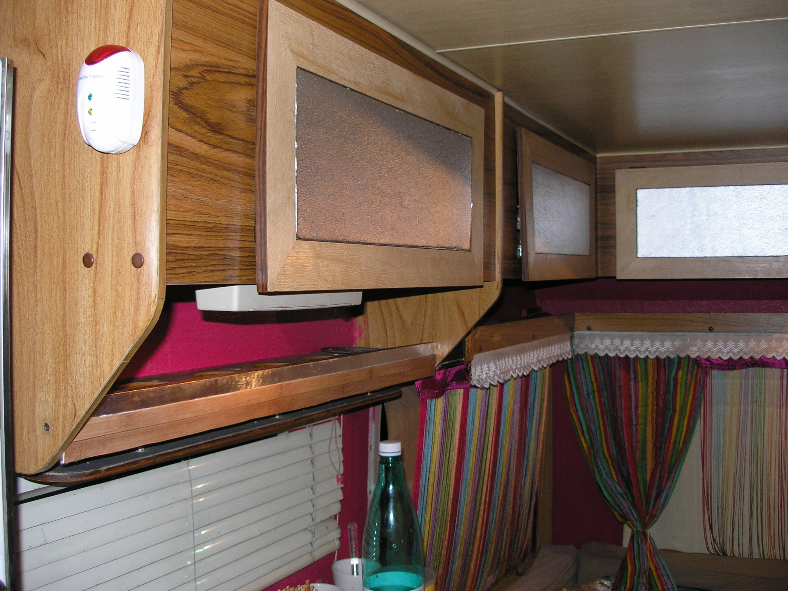
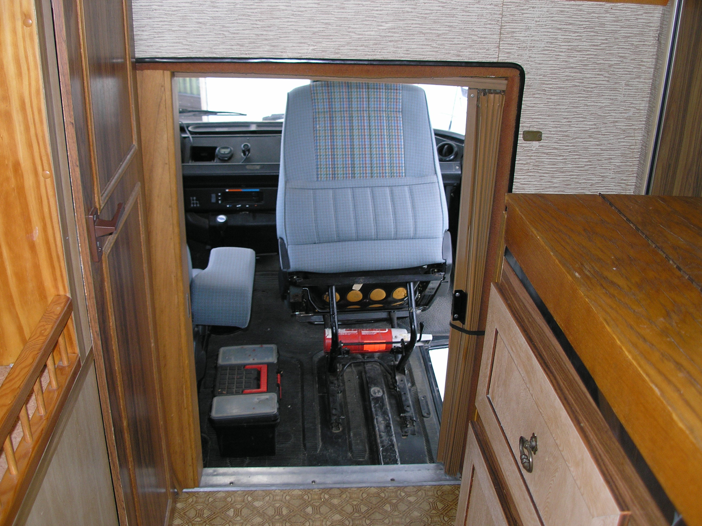
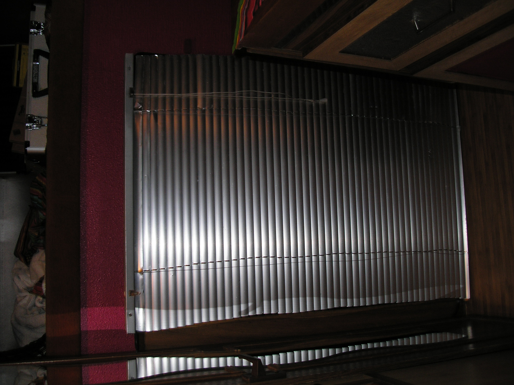
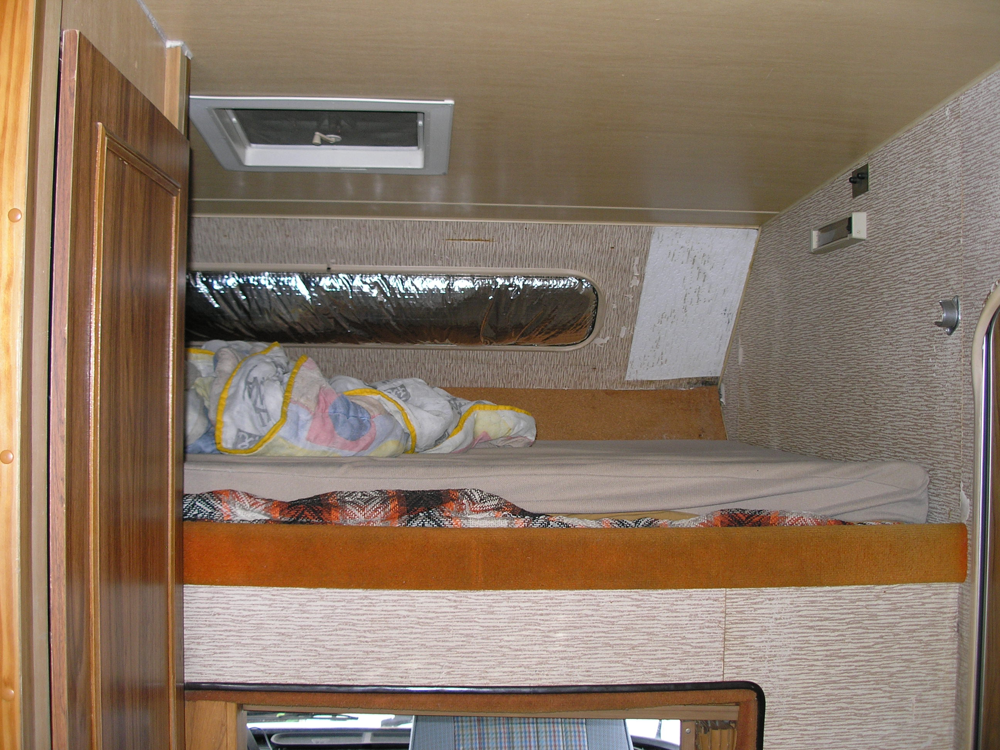
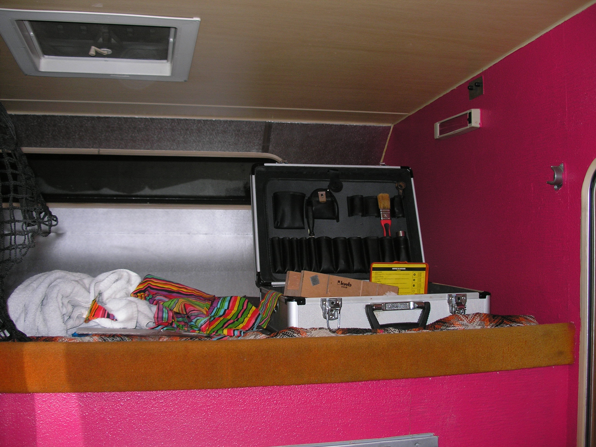
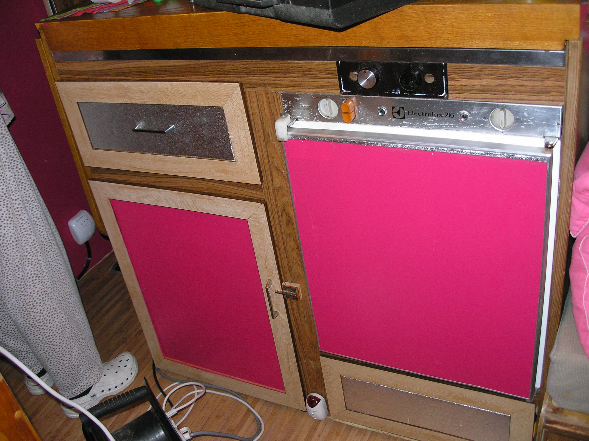
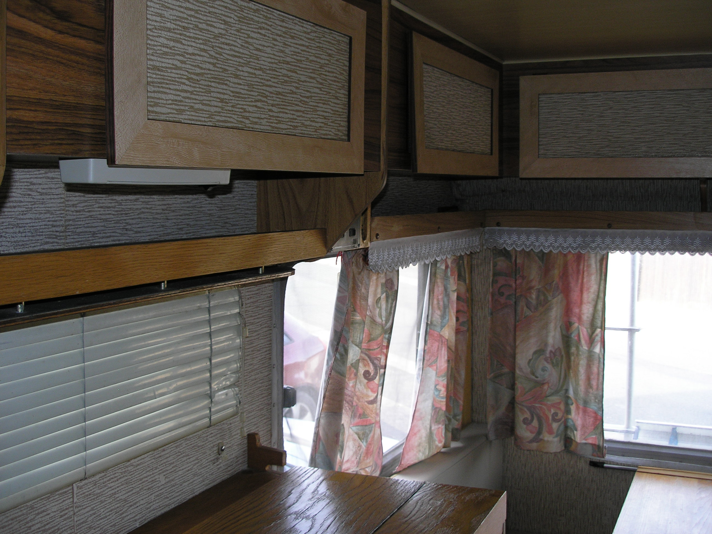
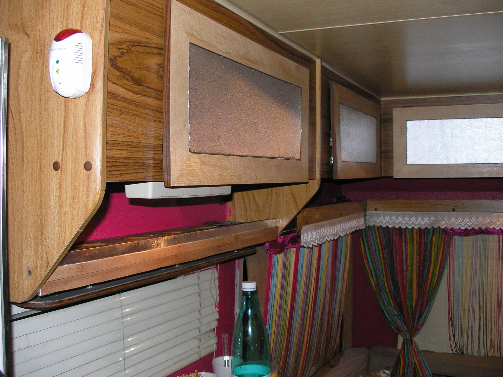
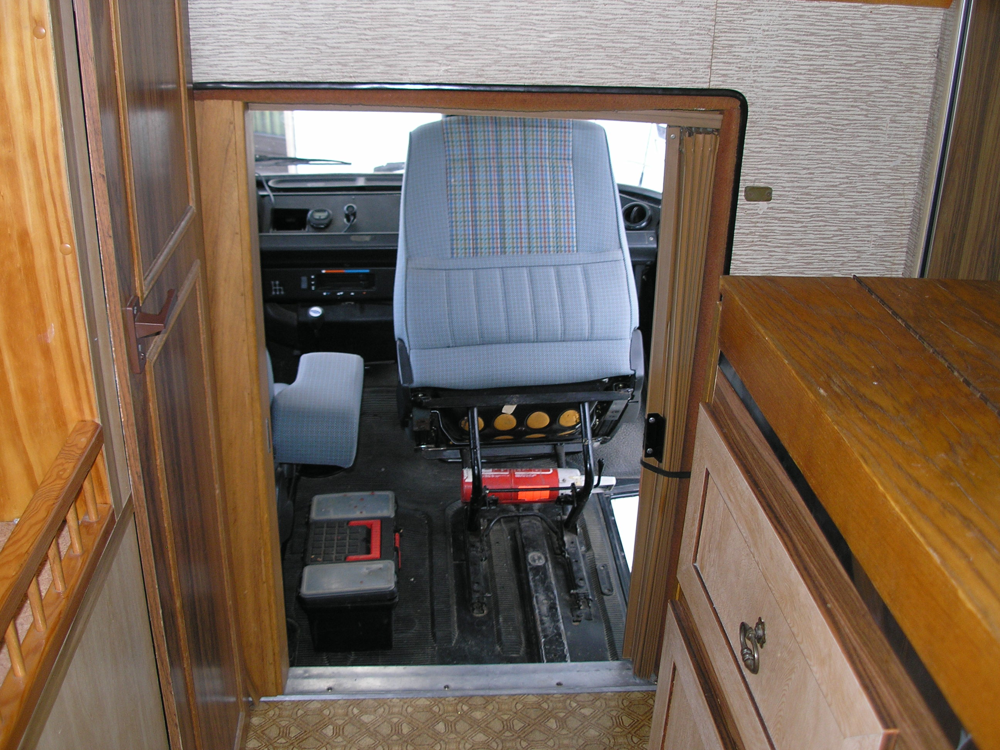
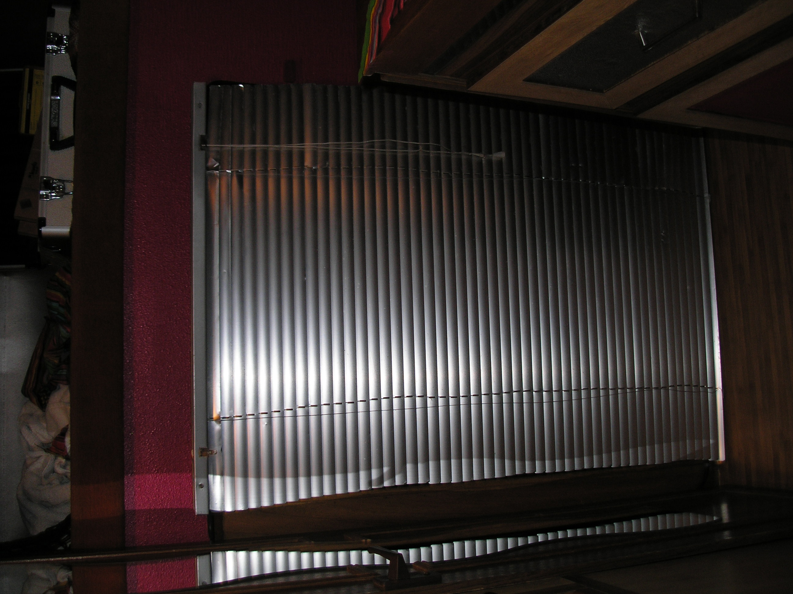
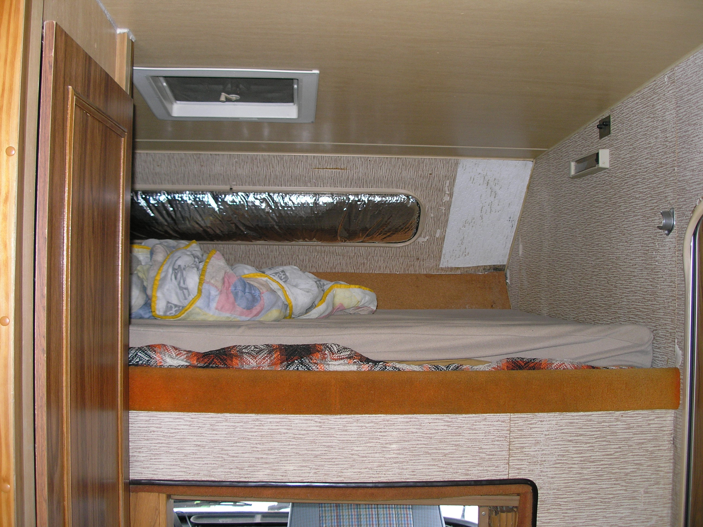
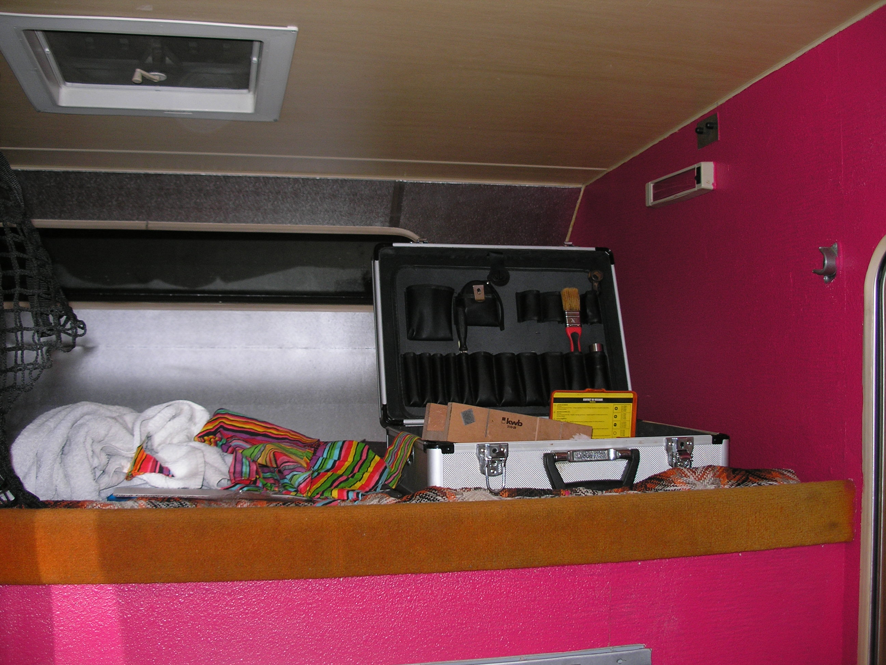